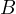
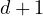
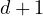
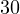
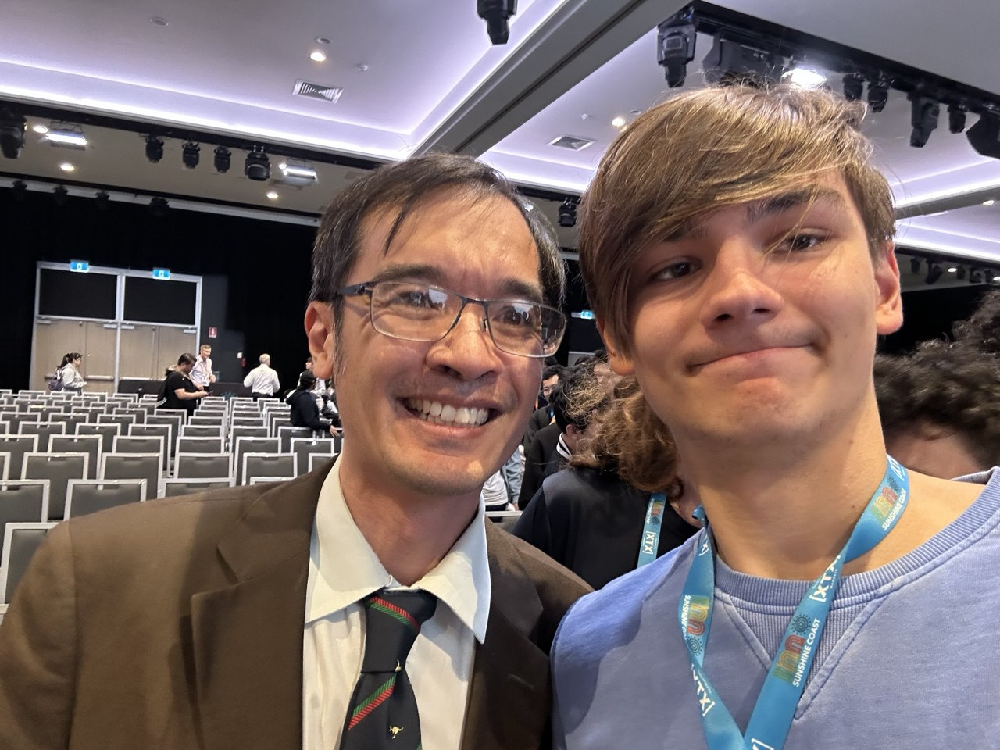
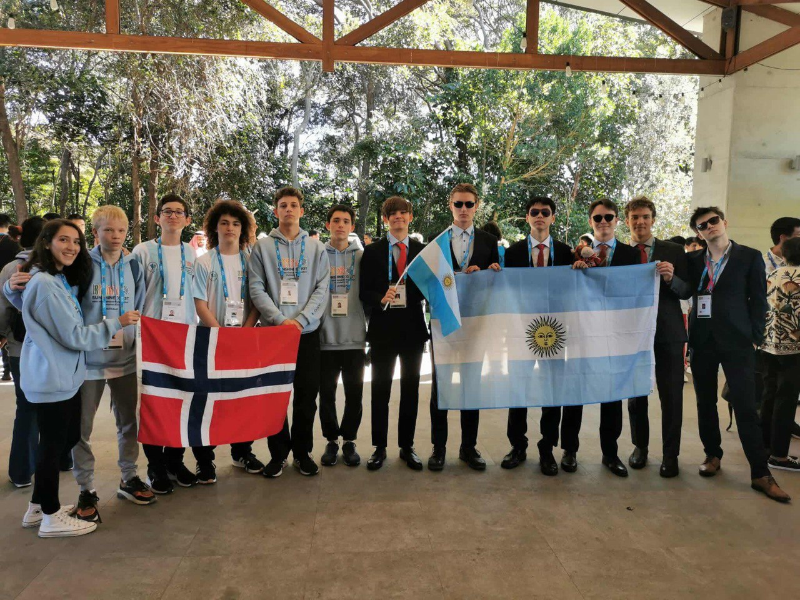

1 Copenhagen
1.1 Day 1
Four out of our team took the airplane from Oslo to Copenhagen, two others traveled from Trondheim to Copenhagen. Everyone arrived and meet up in Burger king at arround .
We arrived to the university at around and at we had our first Combinatorics lecture, the topic of the lecture was the Probobalistic Method, most of the Norwegian team new the contents of the lecture, however the problems where relatively fun. One relatively simple, yet nice problem on the topic which was in sheet was the following,
 be a set of
be a set of  residues modulo
residues modulo
 . Prove that there exists a set
. Prove that there exists a set  of
of  residues modulo such that
contains at least half of the residue classes modulo
residues modulo such that
contains at least half of the residue classes modulo  .
.
Proof. The solution proposed during the class was to generate  randomly
element after element, then the chance that  is good which is
less than
is good which is
less than  which is less than
which is less than  , which proves the theorem. __
, which proves the theorem. __
1.2 Day 2
In the morning we had a hour long geometry lecture where we where talking
about polynomial moving points, group structures on cubics, etc, nobody really
understood everything that happened but a huge portion of the lecture was definetly
very insightful. Later on in the day we had a  hour long number theory lecture on
LTE, the lecture in itself was boring since everything knew LTE, however the
problems where quite nice.
hour long number theory lecture on
LTE, the lecture in itself was boring since everything knew LTE, however the
problems where quite nice.
1.3 Day 3
Today was the individual competition, we had hours and three problems to solve. When I opened the problem sheet and saw NCG my first reaction was quite positive since this is not that bad of a combination.
 that for any divisor
that for any divisor
 of
of  , either  is a divisor of
, either  is a divisor of  as well or is prime.
as well or is prime.
Looking at problem one for minutes and quickly doing all the obvious steps (i.e. highlighting the smallest prime divisor, etc) I notice that the problem is very similar to a problem I solved on AoPS recently, thus I applied the same trick and obtained the exact form of the numbers described in the problem statement. Since, if we consider
we obtain a number which does not have any common prime factors with  ,
however it is also even, consequently not prime, thus it must be that
,
however it is also even, consequently not prime, thus it must be that  is of the
form . From here solving the problem is trivial, however I somehow
overlooked this trivial idea and moved on.
is of the
form . From here solving the problem is trivial, however I somehow
overlooked this trivial idea and moved on.
I realized that it is simple to show by considering the smallest prime that  is
not only even, but also divisible by . I assumed that and noticed
that implies that . Now I realized I can generate a lot of
primes,
is
not only even, but also divisible by . I assumed that and noticed
that implies that . Now I realized I can generate a lot of
primes,
Now, this is where I noticed that and .
Consequently either or is divisible by , thus not
prime. Since (it is simple to show by considering the  ) that must be
larger than the largest odd divisor of
) that must be
larger than the largest odd divisor of  we obtain a contradiction! Careful analysis
concludes four edge cases .
we obtain a contradiction! Careful analysis
concludes four edge cases .
After solving the problem in this beautiful way I thought that the other
contestants would find this problem difficult, however due to me missing a
trivial idea after obtaining the form of  it lead to develop this interesting
proof.
it lead to develop this interesting
proof.
1.4 Day 4
Today was the team competition, a total of 20 problems in four topics has been distributed, I took responsibility of the Geometry problems. Sadly I chose the most difficult ones and left the simple ones to be solved by my friend and ended up not solving any geometry. I moved onto combinatorics and found this beatiful problem,
Problem 1.3 (Team Competition P14)
You have  bags with
bags with  coins each.
Each coin weights
coins each.
Each coin weights  grams, except one bag has
grams, except one bag has  counterfeit coins which
weigh coins each. You do not know and
counterfeit coins which
weigh coins each. You do not know and  beforehand, just that
and
beforehand, just that
and  . You have a scale which you can use
. You have a scale which you can use  times. You
must place an equal number of coins on each side, at which point the scale gives
you the weight difference of the two sides. This calue is positive if the left side is
heavier and negative if the right side is heavier. You must decide all weighings
you will perform before performing any of them. For given values what
is the largest value of
times. You
must place an equal number of coins on each side, at which point the scale gives
you the weight difference of the two sides. This calue is positive if the left side is
heavier and negative if the right side is heavier. You must decide all weighings
you will perform before performing any of them. For given values what
is the largest value of  for which we can always find the bag with counterfeit
coins?
for which we can always find the bag with counterfeit
coins?
The only problem is me and my teamate completely ignored the sentence ”You
do NOT know  and
and  beforehand”. Surprisingly the resulting problem is still
fairly interesting.
beforehand”. Surprisingly the resulting problem is still
fairly interesting.
The next day the traveling began and after hours we arrived in Brisbane.
2 IMO
The flight to Australia was soooo looong... All that I could do was solve problems. During the flight me and my friend where toying with a configuration I wrote an article about. The lights were off for most of the flight so we were solving geometry in the dark...
When we arrived in Australia the team decided to stay at another hotel to rest, since we didn’t want to be jet-lagged during the competition.

It was quite a nice hotel. In the morning I felt it... Quite the experience...
In this state we headed towards the IMO 2025 Hotel. I saw a Kangorooo!
During the day we receieved so much merch! T-Shirts, backpacks, bottles, notepads, pens, plushies, merched towels...
2.1 Contest Analysis, IMO Day 1
Sadly I wake up in the morning with a stuffed nose and a soare throat, I drink some coffee at breakfast, along with some hot tea hoping to survive the exam.
I open the envolope with the problem statements, exactly what I predicted,
CGN! I read problem  , looks interesting, seems to be a fairly original
setting, problem is a geometry with no wierd conditions seems to be a nice
problem!
, looks interesting, seems to be a fairly original
setting, problem is a geometry with no wierd conditions seems to be a nice
problem!
I proceed to spend  hours on problem
hours on problem  , I totally lost focus.
, I totally lost focus.
Problem 2.1 (IMO 2025 P1)
A line in the plane is called sunny if it is not
parallel to any of the x–axis, the y–axis, or the line x + y = 0.
Let n ≥ 3 be a given integer. Determine all nonnegative integers k such that there exist n distinct lines in the plane satisfying both of the following: for all positive integers a and b with a + b ≤ n + 1, the point (a,b) lies on at least one of the lines; and exactly k of the n lines are sunny.
It is a nice problem with a relatively neet idea, it is quite simple, however I in the moment got side tracked into many other less useful ideas. The trick is induction, and noticing that we can consider the three ”border” lines and then remove them if neccesary by induction. I solved it during the contest, but it took me way too much time.
The geometry problem wasn’t anything special either, I only managed to find some basic obversvations with my expectations being points.
Sadly due to many factors I was unable to take a good look at problem three, which turned out to be not as difficult as one may think.
2.2 Contest Analysis, IMO Day 2
As my team proceeded to breakfast it was clear just how nervous everyone was. After a quick meal we proceeded towards the Exam Hall, finding our seats carefully positioned across the venue, just as the day before.
As the competition starts I look at the topic distributation, just as I predicted, again, NAC. I practically solved problem 4 in a matter of  minutes, however there is so much write-up and case work required (not in all solutions, but most) that it took me several more hours to figure out all the details and cases.
For the rest of the competition I tried solving P5 and P6, with obtaining some trivial results in P5 and obtaining quite a strong construction on P6. Sadly the correct construction is quite far from what I have construction, thus I recieved zero points in the end...
2.3 Lectures
Probably one of the most memorable experiences from the IMO are lectures. There were four guest lecturers, one of whom was Terence Tao! Immedietly after his amazing lecture on ”The Equational Theories Project: advancing collaborative mathematical research at scale” I rushed to grab a picture and signature which I am happy I managed to do! On top of that I managed to grab a selfie with Evan Chen himself!

We also had a short discussion with representatives from Google DeepMind, ByteDance, Stanford University, and Huawei about the potential impact of AI on mathematics. Most people agreed that it was nothing more than corporate propaganda.
During the lectures I managed to also grab some selfies with Mathologer, Eddie Woo and Po-Shen Loh!
2.4 Results
During the ceremony our team was dressed in suits and while waiting to enter the hall we took a photo with team Argentina!

In the end I recieved points with a score distribution of earning me an HM. Quite an unfortunate result since I was expecting Bronze, but I guess it is a nice learning experience that I hope I will be able to apply at IMO 2026.
3 Jane Street
After the IMO many teams went to a nice social event hosted by Jane Street. Mathologer came along and sat close to me next to my friend!
The hotel was amazing to say the least, the internet claims it is the best hotel in Brisbane!
During the first day of the event we went to an Arcade, where after 30+ attempts I managed to win a plushie! (of course using Jane Street money)
During the event we also played a lot of board games, one of which was a company exclusive MegaGem!
On Day 2 we went to a Koala sanctuary where I saw A LOT of kangoroos and koalas!
4 Conclusion
I enjoyed my journey a lot, so many memories and new experiences. Though I am not so happy with the result of the competition itself I am sure it will serve me as a valuable lesson for next year. One thing is certain I will be much stronger during next years IMO!
I want to express a big thank you to all of my teammates, my leader and
deputy leader for reviewing my work, as well as to the IMO organizers, Jane
Street, and all the Nordic countries for creating such a wonderful camp in
Soro!